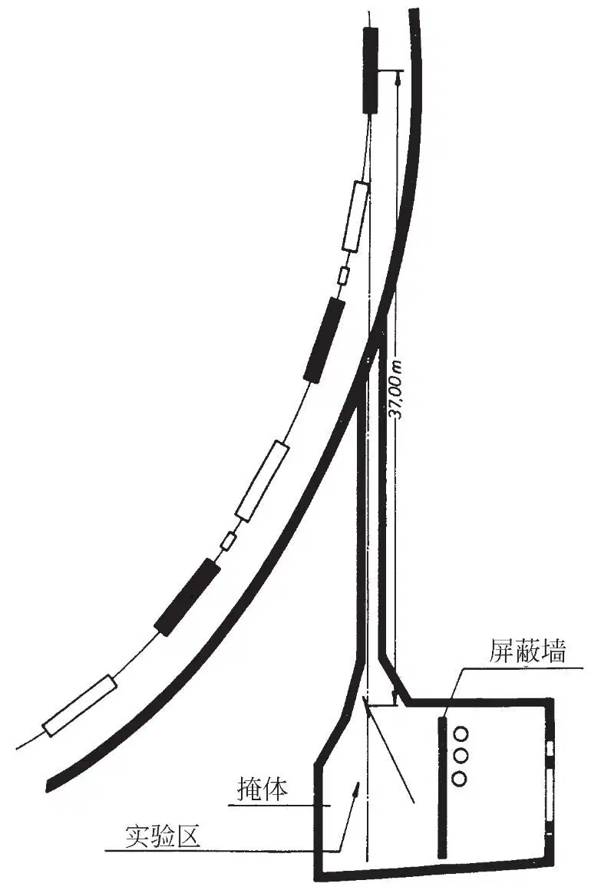
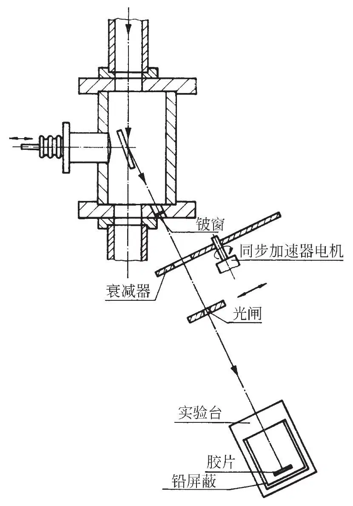
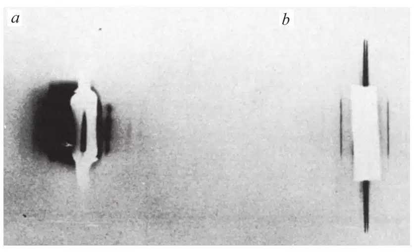
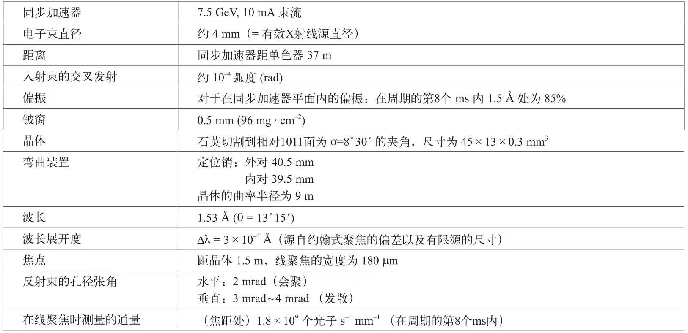
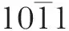
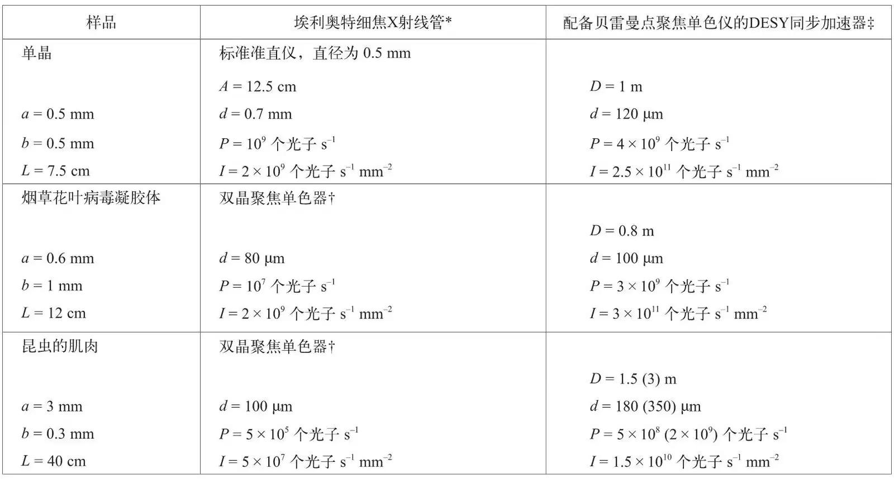

英文
英文罗森鲍姆等
编者按
德国汉堡的新DESY（Deutsches Elektronen Synchrotron：德国电子同步加速器）最近开始运行。在本文中，马克斯·普朗克医学研究所的生物学家格尔德·罗森鲍姆及其同事们证明了这台加速器作为强X射线源在生物成像方面的潜在用途。在DESY环路中运动的相对论性电子自然发射的X射线束要比当时的标准X射线源所产生的射线束亮100倍左右。研究人员发现：使用这个源产生的生物样品的像比使用最好的传统X射线源要清晰得多。现在，同步加速器X射线源已经成为不可或缺的生物成像设备。 英文
当一个电子被加速时，它会发出辐射。在DESY所用的非常高的能量下，发出的辐射被限于电子瞬时运动方向周围的窄椎体之内。因此同步辐射是沿切线方向发出的。同步辐射是多波长的辐射，对于能量为7.5GeV的电子，其同步辐射的峰值落在X射线范围内（见参考文献1中对原始理论的描述及参考文献2~4中对实验细节的介绍）。 英文
DESY同步加速器采用每秒50个脉冲的爆丛，每10ms脉冲含有6×1010个电子（平均束流为10 mA）。注入能量相对较低，电子在10 ms内被加速到7.5 GeV。 英文
大多数X辐射是在每个脉冲的最后3ms内发射的：极少量的辐射来自较低的电子能量，所以在1.5 Å处的时间平均强度约为峰值的20%。 英文
我们已经估算出同步加速器和细焦旋转阳极X射线管的谱线亮度（即以单位面积、单位立体角和单位波长间隔内每秒发射的光子数表示的功率）（见表2），在1.54 Å处分别为2×1022（时间平均）个和3×1020个光子s−1 sterad−1 cm−2 Å−1。这清楚地表明：与目前的X射线管相比，同步加速器是一种亮度非常高的源。衍射实验能从中得到多大的实际好处在很大程度上取决于使辐射聚焦和单色化所必需的光学系统。在标准X射线衍射中可以应用三种类型的聚焦单色器：弯曲玻璃镜、石英单色器和石墨单色器。 英文
本文报道了对用于同步辐射的弯曲石英单色器[5]性质进行的初步研究。我们选择石英是因为它具有合适的弹性和光学性质，因而可以对它进行非对称切割，并能使之弯曲形成一个具有相当大数值孔径的准确聚焦单色器。实质上它还是一个在窄角度范围内折射率接近于1的理想晶体。我们预言使用贝雷曼[6]单色器应该可以将同步辐射聚焦到一个点（200×200µm2）上，在1.5Å处给出的总通量为每秒1010个光子，高于从其他已知X射线源得到的通量（表2）；束的准直也很好。因为焦距小，所以通量密度，这个在使用胶片进行测量时的一个重要参数，比起其他X射线源还会更高一些。 英文
由于石墨有很大的嵌镶度（是石英的300倍），因而石墨单色器或许会有利于我们的应用。然而，当我们使用来自同步加速器的白辐射时，石墨的嵌镶度将导致产生波长相当不均匀的高度发散反射束，因此为了在胶片上形成一个大小合适的光斑，单色器–胶片的距离必须非常短。对于这么短的距离，通过聚焦来收集来自大面积石墨的辐射是不可能的。另一方面，在单色器–胶片距离较大的情况下，反射束需要准直，这也将降低强度的预期值。因此，我们不认为石墨能给出比石英更高的强度。此外，石墨的光学和力学性质在使用上也很不方便。 英文
实验的详细过程
全部实验都是在汉堡DESY的F41（同步辐射）小组的掩体中进行的（图1和图2）。只有当同步加速器和掩体之间的主射束光闸关闭的时候，人才能进入实验区，所以整个实验必须通过遥控进行。石英晶体被放在通向同步加速器环的真空管内。反射束从一个直径为1.5 cm的铍窗（厚0.5 mm）中射出。用一个带有狭缝的旋转圆盘作为衰减器。这个衰减器和一个铅闸装在铍窗附近。使旋转圆盘与同步加速器同步运转。胶片的支架装在一张能通过遥控移动的实验台上，支架距石英晶体约120 cm。在伊尔福工业G胶片上记录强度。单色器（施特格和罗伊特）是由一个石英片（45×13×0.3 mm3）构成的，其包含长轴的面的切割角度为相对1011面约成8°夹角。石英片的弯曲是通过两组销子实现的。在把晶体安装到光束中之前，先要用激光将曲率半径调整至所需的数值。用经过聚焦的照片确定焦点的最终位置。最佳聚焦线的宽度为180µm，这代表了同步加速器内辐射电子束的像。（包括电子回旋加速器和同步加速器振荡在内的总有效源尺寸约为4mm。）照相也是在靠近单色器处进行的，在这里反射束很宽，便于估计总的反射通量。用铝滤波器所作的实验来估计在石英反射的辐射中高次谐波的强度。 英文

图1．DESY中的F41掩体及其相对于同步加速器的位置 英文

图2．单色器的构造和实验装置 英文
如果源到单色器的距离约为40 m，并且晶体对一个波长精确地设定（例如在约翰式聚焦系统中[5]），那么给出的焦点将在10m处。所幸的是，白辐射使我们可以放宽这个条件，从而在波长不均匀性损失很小的情况下得到一个更实际的焦距（1.5m）（表1）。此外，对石英单色器的角度调整并不是很重要。反射束的中心波长是通过测量入射束与反射束之间的夹角来确定的。铍窗的位置和尺寸把我们的观测范围限制在布拉格角为13°±1°之内（即1.5 Å ± 0.15 Å）。 英文
最后要构造的是一台简易的照相机（样品–胶片的距离为40cm），拍摄的照片（图3a）为巨型水虫纵向飞行肌的一条2mm带状区域[7]的赤道反射。照相机的进口孔径约为2mm×2mm。用一只充有氦气的管使辐射–管窗与照相机之间的空间内空气吸收最小。在5 GeV运行的同步加速器的曝光时间为15 min。在直射光束的一侧，明显可以看到由石英和用于使石英弯曲的钢质定位销造成的大面积寄生散射。所幸的是，照相机的进口狭缝并不是对称定位的，因此可获得一侧衍射条纹的清晰图像。与采用传统X射线源（图3b，埃利奥特细焦旋转阳极管和弯曲石英单色器）相比，用同步辐射制成的照片具有相对较大的“20”线宽度，这一现象目前尚未得到解释。从两张照片的相对强度可以看出，同步辐射（5GeV）比现有的最强X射线源要有效约10倍。 英文

图3．拍摄巨型水虫背部纵向飞行肌的赤道反射，采用以下两种方式记录。a，单色的同步辐射；电子能量：5 GeV，束流：8 mA，曝光时间：15 min，样品与胶片的距离：40 cm；注意在托架左侧会出现由单色器支架的荧光引起的寄生散射。b, 40 kV和15 mA的埃利奥特细焦旋转阳极管，曝光时间：1 h，样品与胶片的距离：36 cm。强线是20反射（d=231 Å）；弱线是21、31和32反射。 英文
计算强度和观测强度
根据施温格[1]的理论和由DESY的F41小组成员克卢克编写的程序，我们计算了1.5 Å波长处和1.5 Å谐波处的强度：当同步加速器在7.5 GeV运行时，二次和三次谐波的强度（每秒的光子数）是1.5 Å辐射的两倍。 英文
我们用照相方法测量了在每个同步加速器加速周期第8个ms时通过圆盘衰减器的反射束的瞬时强度。从对不同已知厚度的铝滤波器所作的测量中估计出了高阶的贡献，我们还用到了一些吸收系数数据[8]。伊尔福工业G胶片在1.5Å处的灵敏度是由在1.54 Å处的校准值外推得到的（参考文献9）。实验条件和数据汇总在表1中。 英文
表1. 同步辐射束中石英单色器的数据

由上述方法估计得到的在1.5 Å处的强度与单位波长间隔入射强度的计算值之比是一个“积分带通”，可由下式表示：
∫R(λ)dλ = 0.7 ×10−4 Å
用布拉格定律将波长转换为角度，我们得到了以相对1011面8°30′夹角切割的石英晶体的积分反射率：
∫R(θ)dθ = Rint = 1.0×10–5 rad
石英在本质上是个理想的动态衍射器[10]。伦宁格[11]已经计算出了一个理想石英晶体的反射率（未作吸收校正）：
Rint = 4.4×10−5 rad
布罗格伦[12]通过测量得到了一个经平行于

面切割的抛光石英晶体的积分反射率：Rint = 3.9×10−5 rad
这类具有吸收的非对称切割理想晶体的情况按照达尔文–普林斯理论来处理。利用扎卡里亚森公式[13]，我们计算了以相对面8°30′夹角切割的石英晶体的积分反射率（λ = 1.5 Å）：
Rint = 1.45×10−5 rad
这与我们通过实验得到的数值是一致的。 英文
需要强调的是：我们的实验目的并不是定量测量石英的反射率，而是要说明就构成应用于同步辐射中的聚焦单色器而言，石英是一种很适合的材料，并证实了单色同步辐射的观测通量与计算通量之间并无很大的差异。我们得到的结果表明，单色器的性质是可以准确预言出来的。我们既没有强调对旋转圆盘衰减比的准确测定，也没有强调对光闸速率的准确测定。此外，对高次谐波贡献的估计也可能是不准确的。我们估计，在我们所得结果中的误差也许会达到50%。此外，虽然石英晶体的表面状态对反射率曲线的实际形状和高度影响很大[14,15]，但很难对它进行控制。 英文
对三类样品的强度估计
为了从石英晶体底部给出一束点聚焦辐射，我们打算装配一台贝雷曼单色器[6]，以便在一个平面上形成所需的曲率，并在第二个平面上也弯曲到相应的曲率。似乎无法用理论来说明为什么这样做得到的焦距不能与用简单弯曲晶体得到的焦距有类似的大小，尤其是在同步加速器束流的几何形状不那么严格时，晶体的曲率半径本应该满足的这时不满足了。 英文
以这样一种方式用X射线衍射研究生物学中的三种典型样品，将估测的性能列于表2，并把DESY的性能与“传统的”细焦旋转阳极管的性能进行了比较。强度的计算值是以前面给出的有效带通值0.7×10−4 Å为基础的。 英文
表2. 在生物学中的应用

a，样品宽度；b，样品高度；L，样品与胶片的距离；A，阳极与样品的距离；D，焦距，即单色器与胶片的距离；d，在胶片上的光斑或焦点直径；P，到达样品上的X射线功率；I，焦点处的通量密度。
* 对于第一个样品，将40 kV和50 mA加载到阳极处0.2×2 mm2电子焦点上；对于另外两个样品，将40 kV和15 mA加载到0.14×0.7 mm2焦点上。这个装置是目前可用的最有效的细焦X射线管。
† 这种约翰式[5]单色器装置对每一种类型的样品都是最佳的。
‡ 同步加速器的条件如表1所列，以1.5 Å的辐射进行计算。 英文
X射线管的数据是根据测量伊尔福工业G胶片和与单、双聚焦石英单色器协同使用的埃利奥特细焦旋转阳极管上的旋转圆盘衰减器所得到的结果计算出来的。 英文
更高的强度和更长的波长
几个可能获得更高强度及连续光谱的方法是：（a）按照目前的设计，可以将DESY同步加速器的电流从10 mA升至50 mA。电子也将在1ms~2ms内保持在最大能量，这样一来总强度可以提高至6倍。（b）匈坂[14]提出，轻微的抛光可以使石英摇摆曲线的高度和宽度显著增加。在不影响聚焦尺寸的前提下，达到2倍或3倍的增益是有可能的。（c）对于一些只能应用X射线脉冲的特殊情况，如果实验能与来自同步加速器的周期性最大辐射同步，那么同步加速器就是一个具有明显优势的源。石英的积分反射率基本上随波长呈线性递增，直到波长达到3 Å~4 Å时（参考文献12）。然而，在波长范围为1.5 Å~4.5 Å时，同步辐射的强度却随波长的增加而下降，两者近似成反比。所以反射强度大致与波长无关。以前大家都会避免在长波下作实验，因为阳极材料在长波下的转换效率很低。 英文
感谢DESY委员会为我们提供设备；感谢亨泽尔博士和F41小组所提的建议；感谢阿恩特博士和曼赫茨博士（肌肉样品是他们制备的），以及巴林顿·利博士对贝雷曼单色器的计算。这台设备安置在DESY车间以及德国海德堡的马克斯·普朗克研究所中。欧洲分子生物学组织为本文的两位作者——罗森鲍姆和维茨提供了短期奖金。 英文
（沈乃澂 翻译；尚仁成 审稿）